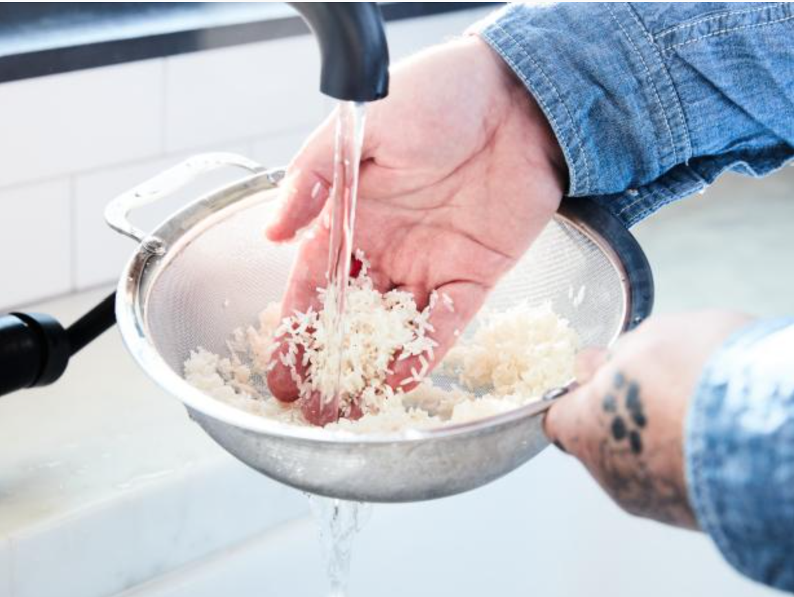

Rice is one of the highest comsumed foods globally and tastes great with a large variety of foods. Despite this, a suprising amount of people don't actually know how to cook rice. Because of this, i'll be showing you right here in this webpage how to cook rice. Cooking rice is a very useful skill as rice is
There are only a few things needed:
The first thing to get is of course, some rice! Feel free to choose the rice of your choice but if you are new to eating rice, I recommend white rice which can pair well with most dishes.
Next on our list is a rice cooker. If you already have one, grea But if you don't, you should consider buying one as it is a very usefulor to to the second option which doesn't need a rice cooker but otherwise
Lastly, we have purified water which should be acessable everywhere.
After getting all of our ingredients, let's start cooking our rice. First, remember to measure the amount of cups of rice you want to cook. Depending on how many people you are cooking for, put in the corresponding cups of rice into your rice cooker
After putting your rice into your rice cooker, it's time to wash your rice. Washing rice is a very simple process, put some water and wash it off lightly similair to washing some vegetables and then poor out the water. Some people say to wash it 2-3 times while some people say to wash it until
the water runs clear but you can choose between those options. Now, close the rice cooker, and depending on your rice cooker, press the cook button and wait 40-60 minutes again, depending on your rice cooker/ mode
When you open the rice cooker, remember to open it slowly and to not put your face too close as the steam will instantly try to escape so it is best to leave it open for 5 - 10 seconds to let it cool off. after that, mix the rice with a big spoon. if you put the spoon into the rice, if some of it sticks to it but is slowly falling, that's a good sign. If otherwise, no rice sticks on it or a lot of rice sticks on it, that means the rice is perfectly cooked
And there you have it, now you know how to cook some delicious rice made all by yourself! Thanks for reading to the end, if you want to read other webpages similar to this, feel free to try out some of my other web pages
Go Back